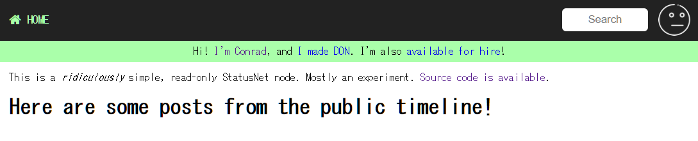

はじめに
deoxxa/don: Less than half of mastodon. はGoによる tootsuite/mastodon の実装です。 まだ開発中で、タイトルによるとmastodonの機能の半分以下らしいです。
この記事はdonをとりあえず動かしてみたメモです。
nginxとSSL証明書の設定
Production-guide.md のnginx にそって設定し、SSL証明書も設定します。
私は hnakamur/mastadon-ansible-playbook: さくらのVPSでmastodonをセットアップするAnsibleプレイブック で構築した環境で systemctl stop mastodon-web でmastodonのサービスを止めた状態で試しました。
donのバイナリを取得
deoxxa/don: Less than half of mastodon. の Prebuilt Binaries でlinux/amd64のバイナリをダウンロードしました。
curl --create-dirs -Lo ~/bin/don_dev 'https://bintray.com/deoxxa/don/download_file?file_path=don_dev_linux-amd64'
chmod +x ~/bin/don_dev
cookie_signing_keyオプションが必須
READMEを読んで最初 --public_url オプションのみ指定したのですが、 --cookie_signing_key オプションも必須だというエラーになりました。
ubuntu@naruh:~$ ~/bin/don_dev --public_url https://mstdn.naruh.com
don_dev: error: required flag --cookie_signing_key not provided, try --help
コードを見ると --cookie_signing_key オプションと
--cookie_encryption_key オプションは16進数文字列で指定するようです。
--cookie_encryption_key オプションにも Required() がついているのでこれも必須です。
cookieSigningKey = app.Flag("cookie_signing_key", "Key for signing cookies.").Envar("COOKIE_SIGNING_KEY").Required().HexBytes()
cookieEncryptionKey = app.Flag("cookie_encryption_key", "Key for encrypting cookies.").Envar("COOKIE_ENCRYPTION_KEY").Required().HexBytes()
使っている個所は don/main.go#L126
ss := sessions.NewCookieStore(*cookieSigningKey, *cookieEncryptionKey)
で、 don/main.go#L19 を見ると gorilla/sessions を使っていました。
sessions.NewCookieStore のドキュメント を見ると、キーペアの最初のキーが認証用で2つ目のキーが暗号化用とのことです。
認証用キーは32バイトか64バイトで、暗号化キーは16, 24, 32バイトのどれかが推奨となっていて、キーは securecookie.GenerateRandomKey で生成すれば良いそうです。
ということで以下のコードを書いてキーを生成しました。
package main
import (
"encoding/hex"
"fmt"
"github.com/gorilla/securecookie"
)
func generateRandomKey(length int) string {
return hex.EncodeToString(securecookie.GenerateRandomKey(length))
}
func main() {
signingKey := generateRandomKey(64)
encryptingKey := generateRandomKey(32)
fmt.Printf("--cookie_signing_key=%s --cookie_encryption_key=%s\n", signingKey, encryptingKey)
}
$ go run main.go
--cookie_signing_key=5072237fbdb086f2541cac0fb007e97f9e6ab90b28e9045e3a754ce329591fc5158f9e46843baf975a6a7caa7bce04f835a9f2ce7113682a26d29e7d76eb5081 --cookie_encryption_key=580bab08ccbc59c98ad43dd2d13d199c79a0033d54e284f8198383c1d8fac196
実行
以下のように実行すると、今度は起動しました (実際に実行するときはドメインは適宜調整してください)。
$ ~/bin/don_dev \
--cookie_signing_key=5072237fbdb086f2541cac0fb007e97f9e6ab90b28e9045e3a754ce329591fc5158f9e46843baf975a6a7caa7bce04f835a9f2ce7113682a26d29e7d76eb5081 \
--cookie_encryption_key=580bab08ccbc59c98ad43dd2d13d199c79a0033d54e284f8198383c1d8fac196 \
--addr ":3000" --public_url https://mstdn.example.com
サインアップフォームからアカウント名、メールアドレス、パスワードを入力すると、メールが送られることなくそのままサインアップ完了となりました。
サインアップしてみると以下のような画面になりました。
This is a ridiculously simple, read-only StatusNet node. Mostly an experiment. Source code is available. と書かれていて、今はリードオンリーなStatusNetのノードとして動いている状態らしいです。
なるほど、読みと書きのうち読みだけなので、Less than half of mastodon というわけなんですね。 以上、とりあえず試してみました！